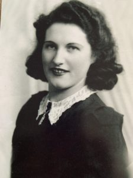
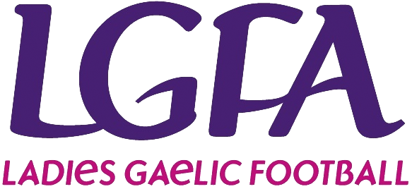

My name is Emma Larkin, and I am the founder of “Emma Larkin Books” and
“Rebel in Kerry Press”. I have recently written and published my first
book “Izzy’s Magical Football Adventure”, and I hope to write many more
books about Izzy and her adventures in sport. As may be evident from the
name of my publishing imprint, I am a “Rebel in Kerry”! This means that I
am originally from County Cork in Ireland, which is known as the Rebel
County, but I moved to Kerry (another county in Ireland which neighbours
Cork) in 2006 and have been happily living in Kerry since then, with my
husband and four children. My husband is a Kerry native and we live in
North Kerry, near Listowel, where my husband is from, and is an area which
is rich is literary history!
I have always enjoyed reading and writing. Writing essays was my favourite
part of primary school!
In my spare time, I love to run. I am very involved in my local parkrun in
Listowel. I also coach ladies’ football at underage level with my local ladies’
football club and did attempt to play ladies football for a few years with my
local “Gaelic4Mothers&Others Team”! I may not have been the greatest football
player, but I could run! And it was an hour each week where I could exercise
in a fun environment with a fantastic group of women, who I remain friends with
to this day.
My inspiration to write this book was my grandmother, Maureen Hennebry, née
Cashman. She was on the Cork camogie team which won the All-Ireland Camogie
Championship three times in row between 1939 and 1941. She came from a family
rich in GAA history, the Cashman’s of Blackrock in Cork, and is even mentioned
in the following poem by the famous Irish poet, Patrick Kavanagh:
Camogie Match
Patrick Kavanagh 1905 - 1967
“Bright shone the sunlight on Peggy and Doreen
Wild swung the ash sticks. Be careful astoreen;
Josie is getting into her stride now,
Kathleen is hurling with all her Cork pride now.
A shout from the side-line: Mark your man, Kathleen Cody.
Kathleen pucks it. I tell you that puck was a dotie.
The game is exciting, it is indeed really,
Maureen Cashman is tackling the bold Ide O’Kiely …“
In hindsight, I am in awe of the fact that my grandmother and her
teammates played camogie at such a high level at a time in Ireland,
where a woman’s role was predominantly to be a wife and homemaker.
Which comes to my reason for writing this book, my grandmother was my
inspiration to write it, but my reason for writing it was to encourage
all young girls to play sports. It is crucial for our wellbeing and
development and we need to make it as normal for girls to play sport
as it is for boys. The growing popularity of women’s sports in
Ireland and further afield is so encouraging and we need to continue
to develop this. As the current 20*20 campaign says, “if she can’t
see it, she can’t be it”.
I hope that my book can in some way help to normalise girls playing
football and that both boys and girls will enjoy reading about Izzy’s
adventures!
